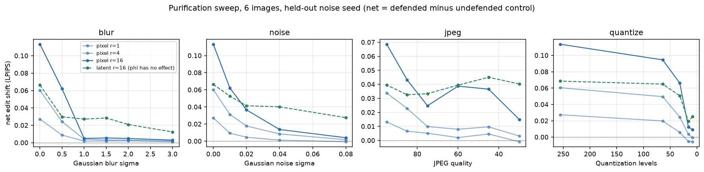
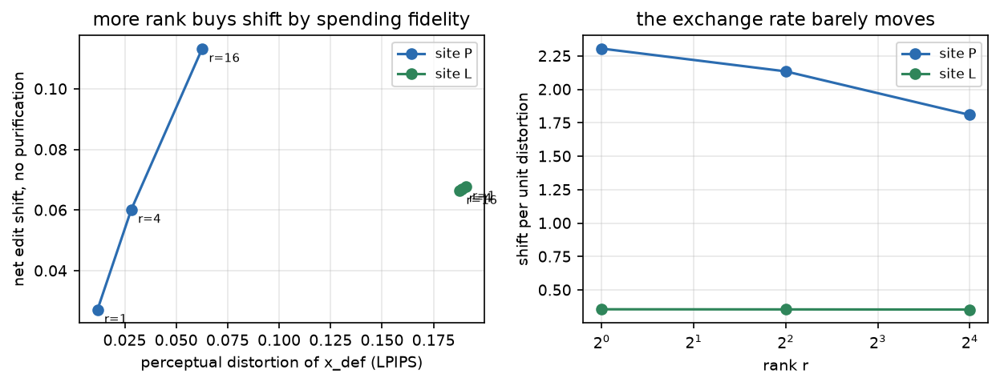
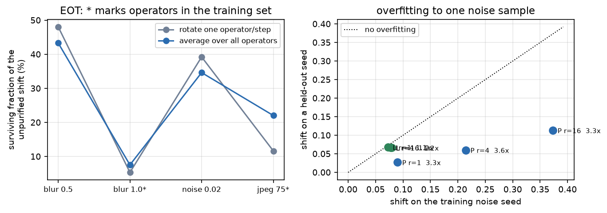
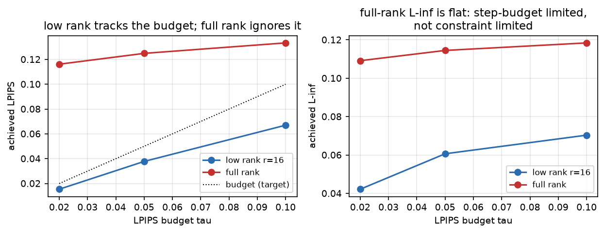
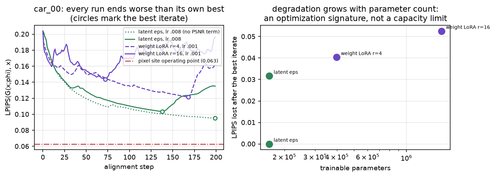
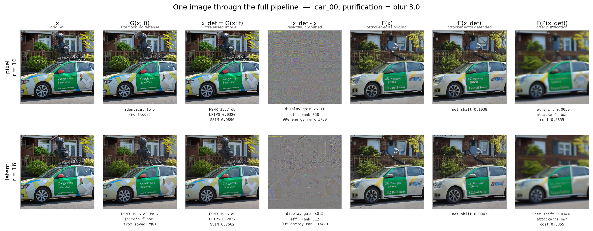
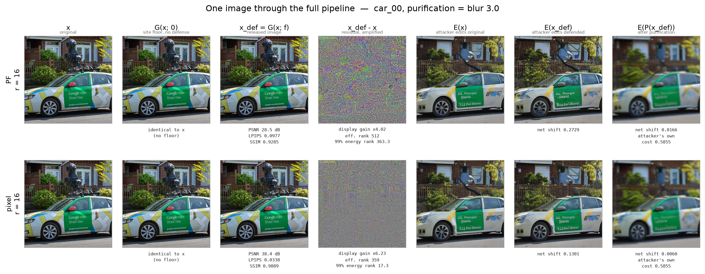

本報告涵蓋 E0–E12，寫於 2026-07-30。其後的實驗推翻了它所依據的兩個前提，報告中的每一個防禦效果數字都因此不可引用：（1）攻擊端沒有 classifier-free guidance，等同 w=1，該設定下 SD v1.4 幾乎不服從 prompt，實測「編輯」與「什麼都沒做」在指標上分不出來，見 docs/RESULTS_E25-E26.md §3；（2）判準 net_lpips 量的是輸出移動了多少，不是編輯有沒有失敗，同份文件 §1。方法層面的結論（成本模型、記憶體歸因、重建地板）不受影響。
單一 Stable Diffusion v1.4 外掛可開關殘差模組，對抗 SDEdit 惡意編輯 · 資料截至 2026-07-30 · 25 個 run、289 個資料檔（當時的數字；現為 95 個 run） · 全部數據在 runs/
四條路徑。第四條（未防禦對照）是必要的：沒有它，淨化本身造成的偏移會被算成防禦效果。
φ 可以住在管線的五個不同位置。關鍵的分類軸不是「φ 住在哪」，而是 「x_def 是生成出來的、還是被擾動出來的」 —— 因為淨化的定義就是把影像投影回自然 影像流形，而加性擾動正是被它針對的東西。
| 位置 | x_def 的構造 | 參數量 | 在流形上？ | blur σ=1.0 存活 | 狀態 |
|---|---|---|---|---|---|
| P 像素低秩 | clamp(x + ΣU⊗V) | 49,152 | 否 | 5.1% | 唯一在運作 |
| PF 像素全秩 | clamp(x + Δ) | 786,432 | 否 | 4.1% | 未收斂，對照無效 |
| L latent | VAE(去噪(ε̂+Δ)) | 163,840 | 是 | — | φ 貢獻為零 |
| LA latent 錨定 | clamp(x + [G(x;φ)−G(x;0)]) | 163,840 | 否 | 負值 | 已停止 |
| E 文字嵌入 | VAE(去噪(c+Δ)) | 13,520 | 是 | — | 已實作，未跑 |
| W 權重 LoRA | VAE(去噪 with W+BA) | 1,591,296 | 是 | — | 容量測試被發散主導 |
我做過的一個設計錯誤。site LA 是我為了繞開保真度地板而發明的錨定寫法。方括號裡 確實是非線性生成的，但外面那個 x + 把它變回加性了 —— 我親手把唯一能檢驗核心假設的那條 arm，變成了又一條加性 arm。它在模糊下是負值， 不是「非加性沒用」的證據，只是再一次證明加性擾動沒用。
生成路徑（L / E / W）的輸出必須經過 VAE 解碼，因此在 φ=0 時就已經帶重建誤差 （LPIPS 0.194 / PSNR 26.56 dB）。實測 φ 的效果比這個誤差小 20–36 倍， 完全被淹沒。
解法借鑑 APA（arXiv 2506.01511）「先立保真、再訓攻擊」的 順序，其餘實作不同。
| 位置 | r | 淨額偏移 | PSNR | LPIPS | SSIM | 有效秩 | 99% 能量秩 | 過擬合 |
|---|---|---|---|---|---|---|---|---|
| P | 1 | 0.0272 | 48.33 | 0.0118 | 0.9978 | 147.2 | 1.1 | 3.31× |
| P | 4 | 0.0602 | 44.04 | 0.0282 | 0.9944 | 173.6 | 4.1 | 3.56× |
| P | 16 | 0.1133 | 39.79 | 0.0626 | 0.9851 | 215.8 | 16.2 | 3.30× |
| L | 1 | 0.0679 | 26.61 | 0.1906 | 0.8677 | 512.0 | 321.6 | 1.07× |
| L | 4 | 0.0671 | 26.62 | 0.1889 | 0.8681 | 512.0 | 321.8 | 1.16× |
| L | 16 | 0.0664 | 26.63 | 0.1876 | 0.8678 | 512.0 | 321.7 | 1.19× |
兩件事一眼可見。P 的 99% 能量秩精確等於注入秩（有效秩偏高完全是 clamp 造成，僅 0.35–0.59% 元素被截斷）。L 的偏移與秩完全無關， 且殘差恆為滿秩 —— 因為那個殘差不是 φ 產生的。
| 淨化 | L r=16 訓練 25 步 | L 完全不訓練（φ=0） |
|---|---|---|
| 無 | 0.0664 | 0.0683 |
| 模糊 0.5 | 0.0299 | 0.0286 |
| 模糊 1.0 | 0.0272 | 0.0275 |
| 模糊 3.0 | 0.0124 | 0.0128 |
| 噪聲 0.02 | 0.0414 | 0.0411 |
| 噪聲 0.08 | 0.0275 | 0.0274 |
逐項三位小數內相同。訓練 25 步與完全不訓練沒有差別。φ 的效果在振幅上 比重建誤差小 20–36 倍（r=1 為 36.2×、r=4 為 24.0×、r=16 為 19.8×）。

| 淨化設定 | P r=16 淨額偏移 | 保留率 |
|---|---|---|
| 無 | 0.1133 | 100% |
| 量化 64 階 | 0.0946 | 83.5% |
| JPEG 95 | 0.0686 | 60.6% |
| 模糊 σ=0.5 | 0.0621 | 54.8% |
| JPEG 75 | 0.0248 | 21.9% |
| 量化 16 階 | 0.0126 | 11.1% |
| 模糊 σ=1.0 | 0.0050 | 4.4% |
| 噪聲 σ=0.08 | 0.0041 | 3.6% |
| 模糊 σ=3.0 | 0.0030 | 2.7% |


| 條件 | 輪替（原始） | 全算子梯度平均 | 變化 |
|---|---|---|---|
| 達成 LPIPS | 0.0378 | 0.0405 | — |
| 無淨化 | 0.0843 | 0.0880 | +4% |
| 模糊 1.0 訓練集內 | 0.0045 | 0.0066 | +47% |
| JPEG 75 訓練集內 | 0.0098 | 0.0194 | +98% |
| 噪聲 0.02 訓練集外 | 0.0331 | 0.0305 | −8% |
模糊下的存活率由 5.3% 升到 7.5%。先前「多訓練不改善模糊下存活」的結論是在一個 確實有瑕疵的 EOT 上量的，但修好之後結論不變 —— 模糊 σ=1.0 是真的把防禦移除掉了。

兩個 arm 的 LPIPS 區間完全不重疊（低秩最高 0.0670，全秩最低 0.1162）， 所以做不出任何匹配比較。固定步數對參數量差 16 倍的兩個 arm 本來就不是正確的控制。
未匹配條件下的初步訊號值得警覺：相對存活率上全秩在噪聲下 50.5%、 低秩只有 30.3%，方向與「低秩＝空間相干＝更耐淨化」的假設相反。

| 載體 | 參數量 | 學習率 | car_00 最終 | 軌跡最佳 | 最佳@步 | 最佳後劣化 |
|---|---|---|---|---|---|---|
| 未對齊基準 | — | — | 0.2032 | — | — | — |
| L（無 PSNR 項） | 163,840 | 0.008 | 0.0950 | 0.0950 | 199 | +0.0000 |
| L（修好的損失） | 163,840 | 0.008 | 0.1351 | 0.1035 | 138 | +0.0316 |
| W r=4 | 397,824 | 0.001 | 0.1618 | 0.1214 | 168 | +0.0404 |
| W r=16 | 1,591,296 | 0.001 | 0.1963 | 0.1437 | 72 | +0.0526 |
混淆項，是我的設計錯誤。site L 用 lr=0.008、site W 用 lr=0.001，因為我交代 agent「W 用探測選出的 lr、L 用 0.008」。兩個載體用不同學習率，L 對 W 的比較不成立。 應該匹配，或兩邊各自探測。
（lr 探測本身是對的：lr=0.008 在 site W 上 30 步就發散到 0.5593，起點才 0.2039。）
因此容量假設既未被支持也未被乾淨檢驗。已修的兩件事是任何重測的前提： 保留軌跡最佳的 φ、env.json 補記 align 參數。
計算圖上有三次 VAE 呼叫（防禦圖解碼、 SDEdit 編碼、SDEdit 解碼）。未 checkpoint 時峰值是三者總和，checkpoint 後是最大值。 單次解碼的峰值不變（9934.5→9934.4 MB）符合此解釋 —— 這是先寫下預測再驗證的。
秒 ≈ 1.05 + 0.384·k_inv + 0.304·n_edit·n_eot
在 (50, 50) 處誤差 0.8%。記憶體與步數無關， 時間線性相關 —— 所以 n_eot 是最貴的旋鈕。
原設定的重建 LPIPS 0.697 —— 不是「接近原圖」， 是另一張圖。逐張 PSNR 地板相差 11.4 dB（car_00 19.96 到 person_00 33.34）， LPIPS 地板只在 0.157–0.210 之間。
Adam 每座標更新量約等於 lr、與梯度無關，而參數 初始尺度僅 0.02 —— lr=0.05 等於每步改動 2.5 倍於參數自身。


我曾寫下「P 不耐淨化而 L 耐 ⟹ 機制是非加性」。兩個對照組推翻了它：φ=0 的 site L 與訓練 25 步的結果逐項三位小數內相同。latent 位置的偏移與耐淨化性全部來自 重建誤差。spec §7.4 的因果切割在本輪無法執行 —— 需要兩個都在運作的位置， 實際只有 P 在運作。
實測低頻能量佔比：P 0.813、L 0.768、白噪聲對照 0.252。兩者都強烈低頻且幾乎一樣。
而且那個診斷本身選錯了。我用的低頻定義是 f < 0.25 cycles/pixel，而高斯模糊
σ=1.0 在 f=0.25 處已衰減到 exp(−2π²·0.0625) ≈ 0.29，
也就是衰減 71%。cutoff 選得比淨化算子的截止頻率寬太多，該診斷沒有鑑別力。
要重做需要細分徑向能譜並疊上淨化算子的轉移函數。
那個結論建立在 car_00 單張上，而 car_00 正是 site LA 的 離群值（無淨化 0.0508/0.0726，其餘五張只有 0.0054–0.0355）。n=6 重測，逐張方向根本 不一致，且 site P 的平均由 0.0021 升到 0.0045，與 n=1 時的 0.0131→0.0100 方向相反。 兩個位置的噪聲 0.08 平均值都小於其逐張標準差，該條件下與零不可區分。
那是 decode(encode(x)) 的往返值。階段一是在挑一個 不同的 z，其解碼結果可能比 encode(x) 的解碼更接近原圖。 真正的限制是「rank-r 的 ε 擾動跨 20 步能把 z 移動多遠」。量到超過 27.51 dB 是可能的。
| # | 原文 | 問題 | 更正 | 狀態 |
|---|---|---|---|---|
| 1 | φ=0 ⟹ d(y_def,y_orig)≈0 | 只對 P 成立，L 有重建誤差 | 改為「模塊停用時不改變任何計算結果」 | 已進規格 |
| 2 | 像素殘差秩精確等於 r，無任何後續非線性變換 | clamp 就是非線性變換（實測有效秩 2→84） | 低秩在能量意義成立、精確秩不成立 | 已進規格 |
| 3 | τ=0.06、PSNR_floor=30 dB，對象為 x_def−x | 對 L 不可達（L∞ 地板 0.707、PSNR 地板逐張差 11.4 dB） | 兩道 hinge 改為相對 x_base | 已進規格 |
| 4 | L_def 以未淨化的 E(x) 為基準 | 淨化本身造成的偏移被算成防禦 | 評測端已扣對照；訓練端在分支上 | 評測已改，訓練未改 |
| 5 | 保真度綁定約束用 PSNR | 逐像素平方誤差與人眼可辨性關聯薄弱；跨影像變異是 LPIPS 的數倍 | 改為 LPIPS(x_def, x_base) ≤ τ，L∞ 守門保留 | 已實作 |
| 優先 | 實驗 | 時間 | 決定什麼 | 阻塞於 |
|---|---|---|---|---|
| 1 | L 對 W 在匹配 lr 下重測（兩邊 lr=0.001，2 張，200 步， 保留最佳 φ） | ~2.6 h | 生成式 x_def 拿不拿得到可用保真度 —— 流形假設能不能測 | GPU |
| 2 | 全秩對照重跑（100 步，τ ∈ {0.05, 0.10}，6 張， 須先確認收斂於 τ 才可解讀偏移） | ~3.7 h | 低秩賣點成立與否 —— 論文前提 | GPU |
| 3 | diffusion-based purification 納入評測（DiffPure / GrIDPure） | 未估 | 沒有它，「流形投影」的說法沒有對應的量測 | 成本未估 |
| 4 | site E（嵌入）與 site W 的防禦效果 | ~2 h 起 | 新機制是否有效 | 卡在第 1 項 |
| 5 | 有目標／VAE 編碼器目標函數 | ~1 h | 是否該換目標函數；編碼器版可跑 1000 步 | GPU |
| 6 | 細分徑向能譜 + 淨化轉移函數疊圖 | 0（僅分析） | 取代已知選錯 cutoff 的頻率診斷 | 需新 run 的 .npy |
| 7 | 跨 sampler、攻擊者用 50 步編輯 | ~1 h | 審稿人一定會問 | GPU |
五個注入位置（P / PF / L / E / W）、三種目標函數（無目標 / 有目標 / 編碼器）、 兩種 EOT 模式（輪替 / 全算子平均）、兩階段訓練、跨 prompt 與跨強度泛化評測都已實作， 114 個測試通過。剩下的全部只差 GPU 時間。
| 路徑 | 內容 |
|---|---|
| runs/ | 逐圖訓練軌跡與診斷圖。本報告寫成時為 25 個 run、289 個 csv/json/md/log，現為 95 個 run |
| docs/REPORT.html | 本報告 |
| docs/figures/ | 7 張分析圖與範例圖 |
| docs/NIGHT_RUN_2026-07-29.md | 夜間執行紀錄，含撤回說明 |
| docs/specs/ | 規格與五處更正紀錄 |
| scripts/make_report_figures.py | 本報告所有分析圖的產生腳本 |
| scripts/figure_pipeline.py | 管線範例圖的產生腳本 |
| branch claude/anchored-site-l | site LA 的程式與 E4–E7 文件（未合併） |
| branch claude/net-defense-objective | 訓練端扣對照的修正（未合併、未執行） |
GPU 累計約 14 小時（V100-SXM2 32GB）。主網格 2 小時 35 分為最大單項。
本報告的每一個數字都來自 runs/ 下的 CSV，
由 scripts/make_report_figures.py 重新計算，未經手抄。